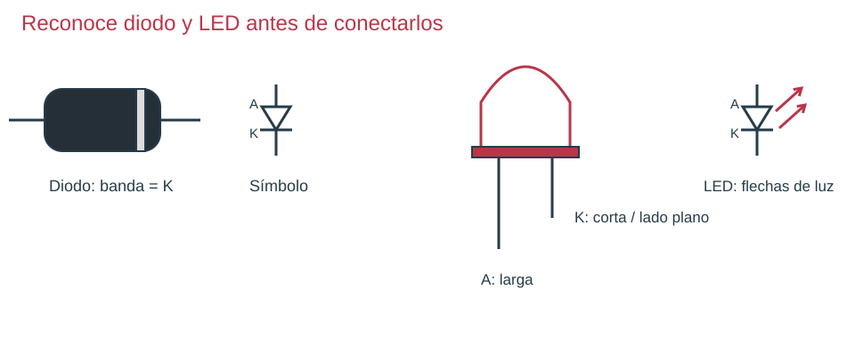
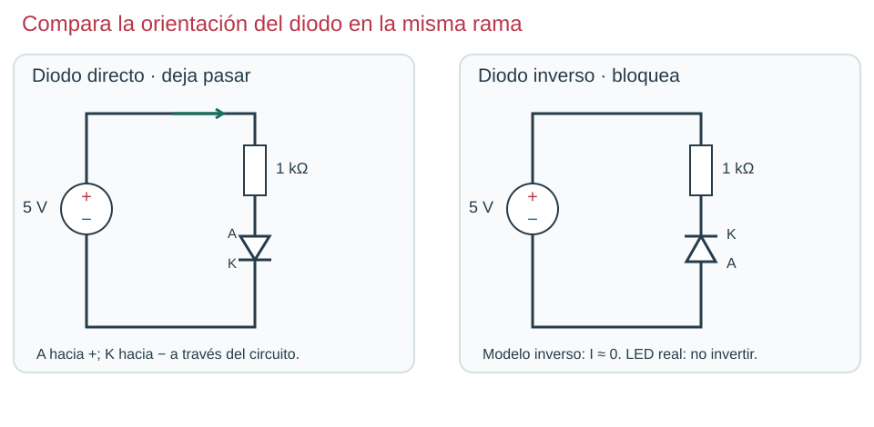
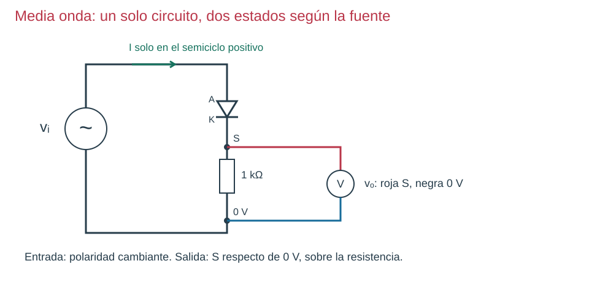

Contenido
Una puerta con sentido preferente
Un diodo deja pasar mucha más corriente en un sentido que en el otro, dentro de sus límites. Tiene ánodo A y cátodo K. La banda de un diodo axial y la barra de su símbolo señalan K. Un LED es un diodo que emite luz: su símbolo añade dos flechas salientes.

En un LED nuevo típico, la patilla larga es A; la corta y el lado plano identifican K. Comprueba el modelo si las patas están cortadas. No confíes solo en el color del encapsulado para conocer su caída de tensión.

En directa, A está a mayor tensión que K y puede circular corriente. En inversa, la corriente es muy pequeña mientras no se exceda el límite del componente. Un diodo real en conducción también tiene una caída de tensión; no es un cable perfecto.
Por qué el LED necesita resistencia
La resistencia limita la corriente. Sin ella, pequeños cambios de tensión pueden producir corrientes que dañen el LED. La fuente reparte su tensión entre la resistencia y el LED de la misma rama.

R = (Vfuente − VLED) / I
Con la resistencia elegida: I = (Vfuente − VLED) / R = VR / R
En la rama LED sin transistor: P1 → resistencia → P2 → LED → P0.
| Magnitud | Símbolo | Unidad | Dónde y cómo se obtiene |
|---|---|---|---|
| Alimentación | Vfuente | voltio (V) | V ⎓; roja P1, negra P0. |
| Caída en LED | VLED | voltio (V) | V ⎓; roja P2, negra P0. |
| Caída en resistencia | VR | voltio (V) | V ⎓; roja P1, negra P2. |
| Intensidad deseada | I | amperio (A) | Dato de diseño; al comprobar, calcular con VR/R. |
| Resistencia serie | R | ohmio (Ω) | Entre P1 y P2; medir aislada y sin fuente. |
R en Ω; tensiones en V; corriente deseada I en A. Es una estimación: VLED depende del componente y de su corriente.
Ejemplo desarrollado
- Datos: fuente 5 V; LED rojo con caída estimada de 2 V; deseamos 10 mA.
- La resistencia recibe VR = 5 − 2 = 3 V.
- Convierte I = 10/1000 = 0,010 A.
- R = 3/0,010 = 300 Ω. Elegimos el valor normalizado de 330 Ω para reducir algo la corriente.
- Comprobación: I ≈ 3/330 = 0,00909 A = 9,09 mA. Si mides otra caída en el LED, recalcula con esa medida.
Antes de rectificar: continua y alterna
En continua, el + y el − mantienen su orientación. Una pila ideal de 5 V produce una línea horizontal a +5 V. Una fuente alterna cambia de polaridad periódicamente: respecto de la misma referencia, la tensión toma valores positivos y negativos. El signo negativo indica inversión de polaridad; no una resistencia negativa.
Con un diodo y una resistencia de carga en serie, en el semiciclo positivo conduce; en el negativo bloquea. La salida sobre la resistencia conserva pulsos de un solo signo. Es continua pulsante, no una tensión constante. Compara circuito, corriente y gráfica en el modelo.

Ahora tú: explica antes de comprobar
En el circuito del LED, el instrumento mide 2,9 V entre P1 y P2. ¿Cuál es la corriente con R = 330 Ω?
Solución razonada, sin cronómetro
I = 2,9/330 = 0,00879 A = 8,79 mA. Usas la caída en la resistencia, no los 5 V de toda la rama.
Práctica y aplicación autónoma · apartado 3
Simula el LED con 330 Ω a 5 V. Marca A/K, mide ambas caídas y comprueba que su suma coincide con la fuente. Detén la simulación, invierte el LED y explica qué cambia. Después predice y comprueba el efecto de 470 Ω, sin cambiar la fuente.
Razona el cambio
En inversa el modelo no conduce normalmente. Con 470 Ω y caída de 2 V, I ≈ 6,38 mA: menos corriente, normalmente menos luz. El brillo físico no se deduce con exactitud de ese cálculo.
Práctica con simulador · ¿Qué hace el condensador?
Si es tu primera vez con el simulador, ten abierta la ficha CircuitJS en 3 gestos (PDF): cambiar un valor, dibujar un cable y entregar.
Es la media onda de arriba con un condensador en paralelo con la carga de 1 kΩ. El interruptor que está junto al condensador lo conecta o lo desconecta. El simulador arranca parado: primero predices y después compruebas. Si no te da tiempo en clase, termínala en casa con el mismo enlace (funciona en el navegador del ordenador, de la tableta o del móvil) y entrégala igual.
- Predice. En el apartado 3 del informe, dibuja cómo crees que será la tensión de salida, sobre la resistencia de 1 kΩ, con el interruptor abierto y con el interruptor cerrado.
- Comprueba. Pulsa «Continuar» (en el móvil está en un panel lateral oculto: toca la pestaña ‖ del borde derecho, debajo de la barra de iconos) y observa el osciloscopio de la salida («Vsalida»). Después pulsa sobre el interruptor para cerrarlo y vuelve a observar.
- Cambia un valor. Haz doble clic sobre el condensador, escribe 50u (la mitad, 50 µF) y pulsa «OK»; después prueba 200u (el doble). La u significa micro: sin ella, el simulador entiende faradios. Fíjate en cuánto baja la salida entre dos picos.
- Explica en dos frases qué hace el condensador y qué cambia al aumentar su capacidad.
- Entrega el estado final en la tarea «Informe de prácticas» de Moodle, en la misma sesión: Archivo → Exportar como enlace… → Copiar al portapapeles y pega el enlace en el texto en línea, debajo del nombre de la práctica; después Archivo → Guardar como…, deja el nombre que propone el simulador y sube ese archivo antes de apagar el ordenador. No pongas tu nombre en el archivo ni en el circuito.
Abrir la simulación en una pestaña nueva (trabaja y entrega desde esa pestaña).
Comprueba tu razonamiento
Sin condensador, la salida son pulsos de un solo signo que bajan hasta 0 V. Con el condensador conectado, se carga en cada pico y alimenta la carga mientras el diodo no conduce: la salida apenas baja entre dos picos. Con más capacidad baja todavía menos; con menos capacidad, baja más. La salida se parece cada vez más a una tensión continua, aunque nunca es una línea perfecta.
Comprueba y razona
Interpreta, decide y explica
Responde antes de abrir la explicación. Sin cronómetro; usa Tab y Entrar para desplegarla.
En el esquema LED, eliges medir P1–P2. ¿Obtienes la caída del LED o de la resistencia? ¿Para qué sirve?
Ver razonamiento
La de la resistencia. Al dividirla entre R obtienes la corriente de toda la rama, también la del LED.
En el modelo ideal de media onda, la entrada vale +3 V y después −3 V. Predice la salida y el sentido o ausencia de corriente en ambos instantes.
Ver razonamiento
Con +3 V el diodo conduce y la carga recibe +3 V; la corriente recorre diodo y resistencia hacia el retorno. Con −3 V bloquea y la salida sobre la carga vale 0 V. No hay corriente inversa en el modelo ideal ni almacenamiento que rellene el intervalo.